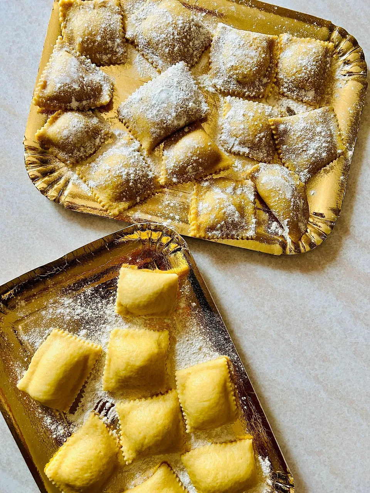
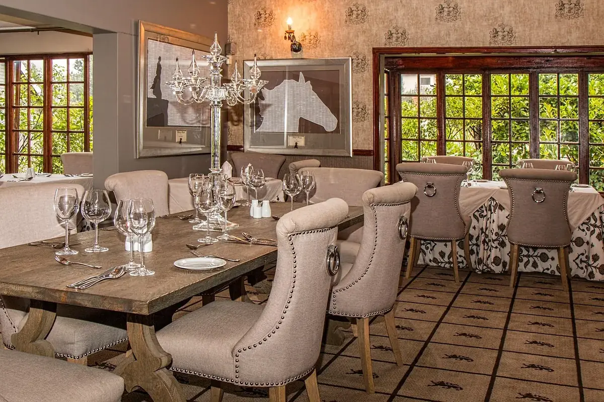
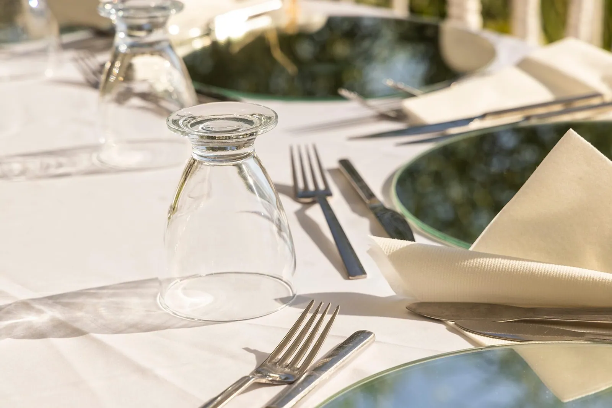
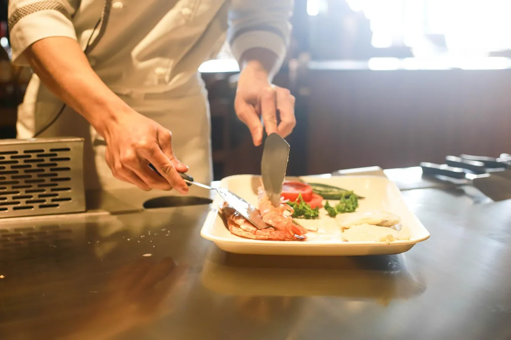

Hand-rolled ravioli
Ricotta and roasted squash, brown butter, toasted hazelnut. Made fresh every morning.

Everything is cooked the same morning it is served, from produce grown less than an hour away. Open for breakfast, lunch and long dinners.
We buy from six farms and two fishermen. If something is not good that week, it comes off the menu — which is why the menu changes and why we will never have forty things on it.
Chef Marisa opened Casa Verde in 2016 after fifteen years cooking in other people's kitchens. The room seats forty-two people, there is a long table for anyone eating alone, and the coffee is roasted three streets away.


"We came for coffee and stayed for lunch. The ravioli is the best I have had outside Italy, and the staff did not rush us once."
Marites D.Visited in March"Booked online at 11am and had a table by 7pm. Small menu, which I now realise is a good sign, not a bad one."
Jonathan R.Visited in April"Took my mother for her birthday. They remembered the cake without me having to remind them. That is why we keep going back."
Angela P.Visited in FebruaryTell us when and how many. We reply by message within the hour during opening times.
Walk in and we will find you a seat. Or send a message and we will hold one.